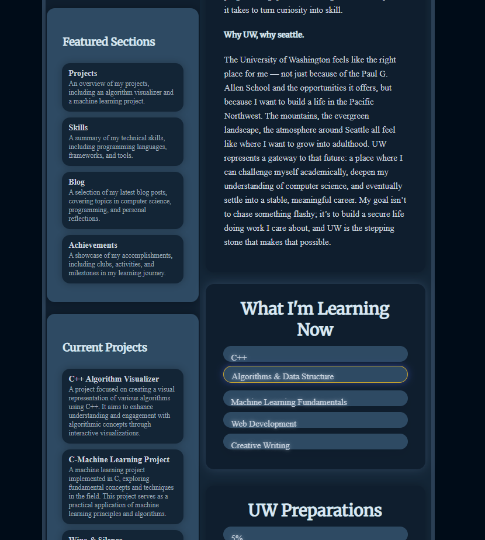

Before I can embark on my journey toward a Algorithm Visualizer, I wanted to first polish up the foundation of my portfolio, and share a bit about myself, and where I'm currently at in my journey, through this blog post, I've been tinkering around with my portfolio for a while, and I think it's finally time to begin adding some substance.
I first began building the footer & my homepage, I wanted to get the basics down before I began on my projects, I think it's important to have a solid foundation before building up further, so for now I've left it with basic shades, and transitions, I wish to perhaps introduce some animations to my website once possible, I built up some bars to represent a summary of my skills, and I'm pretty happy with how it turned out, I think it's important to have a good first impression, and I think the homepage does a good job of that.
While I would love to wrestle around further and develop my portfolio, with animated menus, progress bars, and more, I cannot do so without having some substance, I've began planning to develop an algorithm visualizer, algorithms are interesting because they are the foundation of computer science, and I think it's important to have a good understanding of them alongside data structures, I find it interesting how we, humans, also use algorithms so much in our daily lives without never noticing or thinking about it.

Throughout the past week, I've doing a lot of research on algorithms, data structures, I've been reading and watching videos about how the different algorithms function, and how they are applied in different applications, I've found that, while I have a decent understanding of the basics, I still have a long way to go, algorithms are a vast topic, and from reading books to watching videos on youtube from small creators to universities. I must admit it was surely overwhelming at first, but I think I've finally found a good starting point to begin my coding journey as I've began to grasp the concepts of different algorithms and where they could be used.
I've began drafting up ideas for how I plan my algorithm visualizer to work, the interface, how it is presented, and how I'm going to share it, I believe it will be a good project to work on, and make me more of a programmer, as I accelerate my understanding of low-level computer functions, and how to implement them, I also think it will be a good project to share with others, as it will be a good way to introduce people to computers, and how they work, I hope to make it as intuitive as possible, so It'll be a good tool for all.